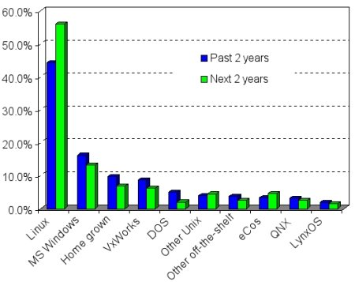
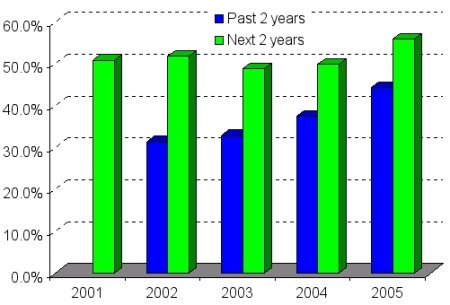
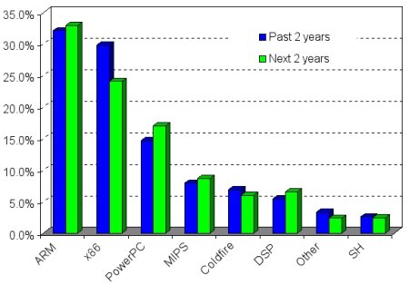
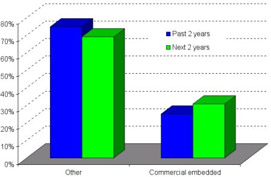
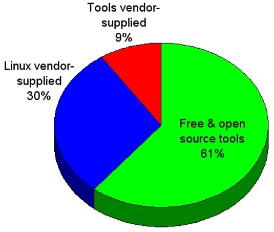
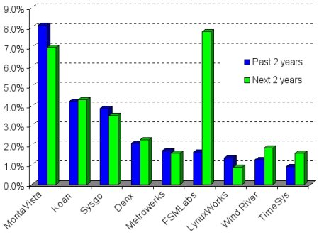
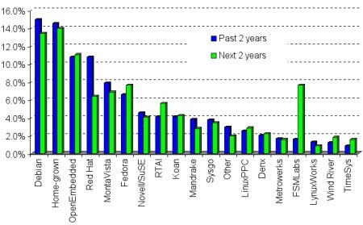
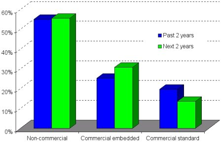
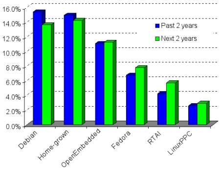

|
|
| Embedded Linux market snapshot, 2005 |
(May 4, 2005)
The results of LinuxDevices.com's fifth annual Embedded Linux Market Survey are in! This brief summary outlines our interpretation of a few key data points. Overall, we find the results encouraging for embedded Linux, and for companies in the embedded Linux OS and tools market.
This year, our survey drew 775 respondents, or 175 more than last year. This alone shows that interest in embedded Linux continues to grow, a fact also reflected by the growing readership attracted by our Website and opt-in newsletter.
As we did last year, we encourage readers to draw their own conclusions from the complete survey response data. Last year's (2004) complete data and summary findings are also available for comparison, along with those from years past and many other market research reports (see "For further research" section below).
Please note that while we make every effort to increase result validity by limiting responses to a single submission per IP address, respondents are self-selected, and we have minimal control over multiple or dishonest voting. Additionally, our market share results are not meant to reflect upon the commercial success of individual companies. For commercial marketshare figures, LinuxDevices.com recommends VDC, EDC, IDC, ABI, and Gartner, among other capable sources.
And now, our observations . . .
Linux on strong uptake curve in embedded
Our 2003 survey found that 33 percent of respondents used embedded Linux in their (or their company's) products during the past two years, while 49 percent expected to within two years. This year, 43 percent say they have used Linux, while 55 expect to. Linux use in embedded continues to swell dramatically.

Which OSes have been in your (or company's) embedded systems during the past 2 years? Which will be used during the next two?
In second place, Windows adoption is also up, growing from 13 percent in 2003 to 16 percent in 2005. It's interesting to note that the expectation of future Windows use has consistently rated below past use in each of the last three years, suggesting that LinuxDevices readers may wish to move away from Microsoft's embedded OSes.
Unsurprisingly, our annual reader surveys have always shown a high expectation of future Linux use in embedded projects. However, 2005 marks the first year that actual Linux use really seems to be catching up with the optimism behind embedded Linux, as indicated in the following graph.

Actual and projected Linux use, over the last five years
ARM now top embedded processor architecture
Last year's survey suggested that more embedded Linux developers expected to base projects on ARM than on x86 processors during the next two years. That expectation was realized this year, with 31 percent reporting using ARM in recent designs, compared to 28 percent using x86. Additionally, enthusiasm for ARM remains high, with 32 percent expecting to use ARM in future designs during the coming two years, compared with 24 percent for x86.

What CPUs were used in your embedded projects during the past two years? Which will be used during the next two?
Despite being relegated to second place, x86 remains a popular architecture, used by 28 percent of respondents, up very slightly from last year. With the exception of ARM and x86, every other processor architecture had slightly lower usage this year than last.
We asked about DSPs (digital signal processors) for the first time this year, and a surprising 5 percent reported using DSPs as the primary processor, with 6 percent planning to. Linux DSP ports emerged only recently, but seem to be making a strong start, possibly driven by the low cost of DSPs compared to traditional processors.
Commercial Linux providers gaining marketshare
Last year, we asked our readers where they obtained the Linux OS that they used in their embedded designs, and only 21 percent cited "embedded Linux vendors." This year, 25 percent reported getting their Linux from an embedded Linux vendor, such as MontaVista, Koan, Sysgo, Denx, Metrowerks, FSMLabs, LynuxWorks, Wind River, or TimeSys.
Similarly, 24 percent of last year's respondents said they expected to source Linux from an embedded Linux vendor during the coming two years, while this year, 31 percent expect to.

Where respondents obtained their embedded Linux OSes during the past two years. Where they expect to get them during the next two years
Quantifying the number of developers paying for embedded Linux distributions is tricky, however, because many commercial Linux distributors also offer unsupported free distributions. Thus, the percentage of respondents using commercial tools may more accurately reflect the proportion of paying and non-paying embedded Linux developers.
In that regard, about 30 percent of respondents said they expect to use tools provided by embedded Linux vendors -- a similar percentage to the 25 percent who reported sourcing Linux from embedded Linux vendors in recent projects and 30 percent who say they plan to.

What development tools are you most likely to use?
This further supports the conclusion that roughly a third of embedded Linux developers expect to make use of products obtained from commercial embedded Linux providers, while two-thirds are likely to turn to non-commercial or non-embedded sources for their Linux OSes.
MontaVista -- the eight percent gorilla
Among LinuxDevices readers who cited an embedded Linux vendor as their source for Linux, nearly a third cited MontaVista, making it the most popular embedded Linux vendor, currently.

Usage of distributions from embedded Linux vendors, during the past two years and the next two years
However, among all LinuxDevices readers who reported using Linux in embedded designs, only eight percent cited MontaVista, putting it well behind Debian, Home-Grown (assembled from freely downloadable, non-commercial sources), OpenEmbedded, and Red Hat, as indicated in the following graph.

What forms of Linux have been in your (company's) embedded systems during the past two years? Which do you plan to use during the next two?
Taken as a whole, the embedded Linux landscape seems most noteworthy for the large variety of popular sourcing options, rather than for the dominance of any single vendor or organization. This suggests that Linux continues to deliver on the promise of vendor neutrality and absence of vendor lock-in, and that embedded Linux technology remains adequately decoupled from the fortunes or failings of any single company or organization.

Distribution of responses among Non-commercial, commercial-embedded, and commercial-standard Linux alternatives
As seen above, non-commercial options were identified as the current or future preference by over half of the survey's participants using Linux in embedded applications. The following graph takes a closer look at the non-commercial alternatives.

Usage of distributions from non-commercial sources, during the past two years and the next two years
The OpenEmbedded project appears to be a notable up-and-comer, ranking second only to Debian among non-commercial Linux sources on its first year on our survey. Part of OpenEmbedded's popularity may have derived from an unfortunate mailing list post encouraging users to vote. However, there's no doubt the project has momentum. It began as the OpenZaurus project, and then evolved into a cross-platform build system supporting a wide variety of embedded targets.
Real-time on the rise
It would be hard to look at the charts from the previous observation and not notice the rising fortunes of real-time Linux specialist FSMLabs. Enthusiam appears to be very high for the company, with nearly 8 percent expecting to use its RTLinuxPro, or RTLinux (which is free for use in designs licensed under the GNU GPL), in projects during the next two years. FSMLabs said in September of 2003, when it released RTLinuxPro 2.0, that major ease-of-use improvements would greatly expand its market prospects, a prophesy that could stand to come true, if our reader survey results are indicative of actual trends.
Another remarkable result is the emergence of Italian real-time specialist Koan, which was included in our survey for the first time. Koan was the second most popular source of Linux, among commercial suppliers cited by LinuxDevices readers. Like FSMLabs, Koan sells a real-time Linux variant -- KLinux (Koan also distributes a free version of KLinux, but without the real-time extensions).
Meanwhile, among non-commercial sources of Linux, RTAI emerged as a popular choice used by a reported four percent of LinuxDevices readers in its first year on our survey.
Support more appealing than royalties
MontaVista surprised the embedded Linux industry by announcing it expected to earn half its revenues through royalty-based licensing. However, developer seat and support licensing remains the norm in the embedded Linux market, with 72 percent or respondents reporting they would NOT consider paying royalties, while 56 percent said they WOULD consider paying for support.
Left: Would you consider paying per-unit royalties? Right: Would you consider paying for development services/support?
Additional findings
The findings above are merely the most salient results, in our view, of this year's reader survey. The complete results also reflect our readers's opinions and habits with regard to the quality of available development tools, potential legal threats faced by Linux, open source licensing due diligence procedures, the size of companies using embedded Linux, what embedded Linux is being used for, and more.
Take a look at the complete data set, and let us know what YOU find interesting, using the Talkback thread below.
Talk back!
Share your response to our observations above, or post your own analysis based on our complete response data:
Discuss the survey results
For Further Research
Research findings from industry analysts:
Reports and data from past LinuxDevices.com surveys:
Other related stories:
 |
|
|
|
|
|
|
|
 Use of this site is governed by our
Terms of Use
and Privacy Policy.
Except where otherwise specified, the contents of this site are copyright © 1999-2005
Ziff Davis Publishing Holdings Inc.
All Rights Reserved. Reproduction in whole or in part without permission is prohibited. Linux is a registered trademark of Linus Torvalds. All other marks are the property of their respective owners.
Use of this site is governed by our
Terms of Use
and Privacy Policy.
Except where otherwise specified, the contents of this site are copyright © 1999-2005
Ziff Davis Publishing Holdings Inc.
All Rights Reserved. Reproduction in whole or in part without permission is prohibited. Linux is a registered trademark of Linus Torvalds. All other marks are the property of their respective owners.


 news feed
news feed